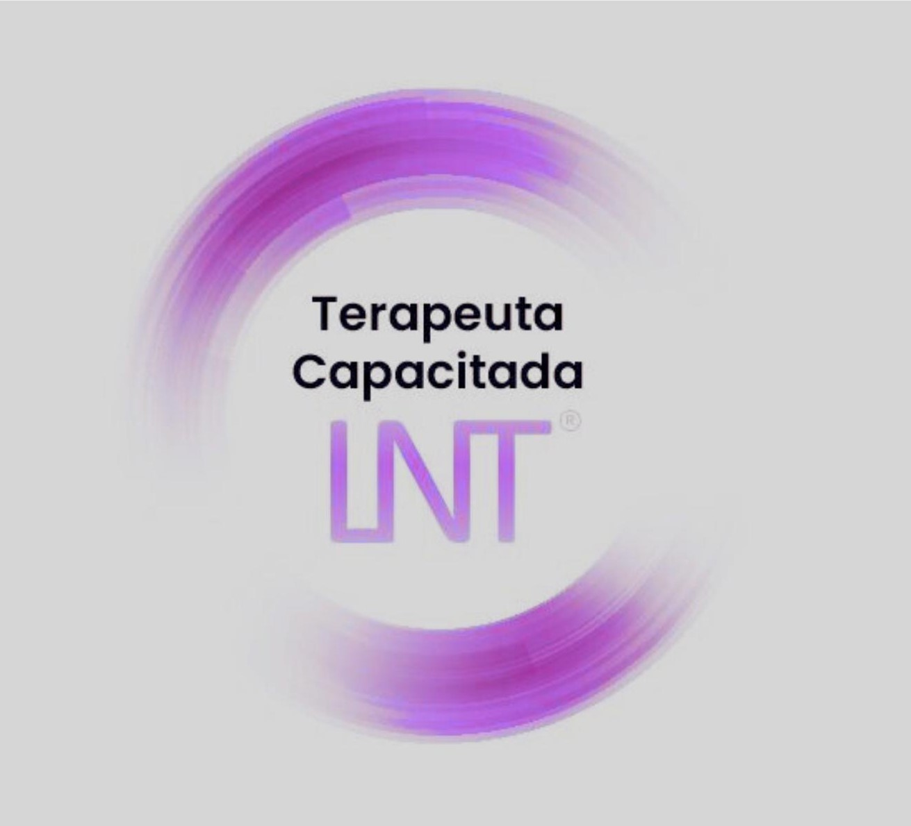

Cuidamos tu cuerpo y tu energía para tu bienestar integral
Técnica de sanación cuántica mediante imposición de manos que equilibra el cuerpo físico, mental y espiritual. Durante la sesión, el cliente libera tensiones a través de movimientos espontáneos, favoreciendo un reajuste natural y profundo.

Todos los terapeutas capacitados en La Nueva Terapia® deben disponer de esta acreditación oficial, garantizando una formación adecuada y una aplicación segura de la técnica.
Tratamiento manual que mejora la movilidad y el equilibrio corporal.
Masaje terapéutico que reduce tensiones y mejora la circulación.
Estimula el sistema linfático y ayuda a eliminar toxinas.
Terapia energética que aporta equilibrio y relajación profunda.
Favorece el equilibrio del sistema nervioso de forma suave.
Estimulación corporal para mejorar la circulación y tonificar.
📞 601 861 940
📧 lessaterapias12@gmail.com
📍 Gandia